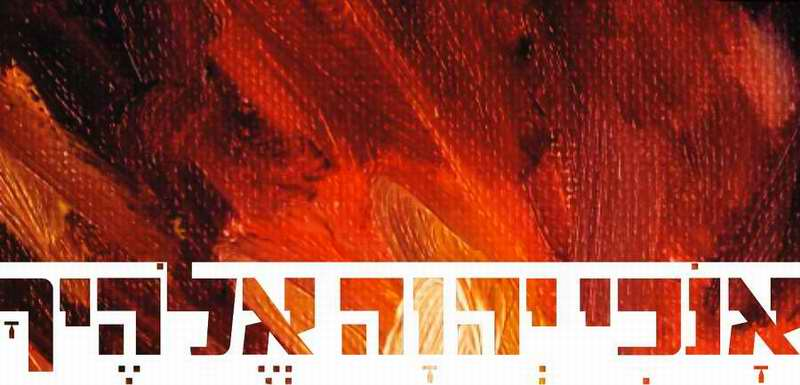

Shavuot. The Feast of the Gift of Freedom
The revelation at Sinai through the eyes of an artist. A DECLARATION OF FREEDOM.
"I have seen an end of all perfection: but thy commandment is exceeding broad" (Ps. 119:96).
"Perfect freedom through self-limitation is an amazing paradox of divine providence." (Olga Medvedeva)
We know several of the artists who stood at Mount Sinai. There were many artists there, but of these three we know the names and genealogies. The Torah also bears witness to their unique creative work. They stood at the foot of the mountain at that terrible time when the mountain shook, and there was smoke as from a furnace, and lightning, and the voice of the shofar, and the voice from heaven: "I am the LORD thy God… Thou shalt not make unto thee…"
Here are their names: Bezalel, son of Uri, son of Hur, called by the Creator of heaven and earth to set up the sanctuary for God Most High; also his helper Oholiav, son of Ahisamakh, of the tribe of Dan; and the artist Bezalel's grandfather, Hur, of the tribe of Yehudah. This Hur, according to tradition, laid down his life on the altar before the LORD for the sake of kiddush ha-Shem (the sanctification of the name of the Most High).
What thoughts filled their minds when the eternal words thundered out: "Thou shalt not make unto thee any graven image, or any likeness of any thing that is in heaven above, or that is in the earth beneath, or that is in the water under the earth: Thou shalt not bow down thyself to them, nor serve them: for I the LORD thy God am a jealous God, visiting the iniquity of the fathers upon the children unto the third and fourth generation of them that hate me" (Exod. 20:4–5)?
We know their very first reaction. A cry burst from the people as from one mouth. The Torah tells us their words, the legendary "na'aseh ve-nishma" (Exod. 24:7). And that is understandable: it was very frightening, and there was practically no other option.
But afterwards this utterance went on crying out to them, not letting them go and not allowing them to carry on as if nothing had happened. The thought gave them no peace… What were they to do with their art? Was everything they had lived by until then accursed before the Creator?
That was three and a half thousand years ago. What have these ancient things to do with us?
The various Christian denominations resolve this "THOU SHALT NOT MAKE…" each in its own way. But what is a faithful Messianic Jew to do? In Israel there are many artists, musicians, poets and so on and so on, and they keep on coming and coming…
A Declaration of FREEDOM. The Name that SETS FREE
God reveals Himself to His people and introduces Himself by a special name. This principle can be seen many times: God reveals Himself in a particular name. He has many such names. And of course the name in which He reveals Himself in a given situation is connected with the context of what follows.
"I am the LORD thy God, which have brought thee out of the land of Egypt, out of the house of bondage."
אָנֹכִי יְהוָה אֱלֹהֶיךָ אֲשֶׁר הוֹצֵאתִיךָ מֵאֶרֶץ מִצְרַיִם מִבֵּית עֲבָדִים׃
Exod. 20:2 ANOKHI ADONAI ELOHEKHA ASHER HOTSETIKHA ME-ERETS MITSRAYIM, MI-BEIT AVADIM
So in this case the Most High reveals Himself under the name "I am the LORD thy God, which have brought thee out of the land of Egypt, out of the house of bondage…" (Exod. 20:2). That is: I am God the DELIVERER.
And He is jealous, not prepared to share Israel with anyone: "Thou shalt have no other gods before me" (Exod. 20:3). You cannot be a slave to anyone else. That means you must be absolutely free, a slave to no one! You must belong to Me wholly and undividedly, as it is written: "love… with ALL thine heart, and with ALL thy soul, and with ALL thy might" (Deut. 6:5), with ALL that is in you.
If in the FIRST COMMANDMENT God appears under the name of the DELIVERER, all nine commandments that follow the first should be understood precisely in the context of this name. Isaiah (Isa. 61:1), unfolding the essence of this name of God, says: "to proclaim liberty to the captives, and the opening of the prison to them that are bound…". So the commandments we are talking about are meant not to enslave but to set free.
What kind of freedom is it, if I am forbidden things?!
What shall we say: did Israel become completely free on coming out of Egypt? Did our fathers stop worshipping other gods? Let us be honest! We today, partakers of the covenant established upon better promises, the covenant of grace, what shall we say: have all our gods, everything we worshipped in our "Egypt", really vanished into nothingness? Do we not now have the "freedom" to worship our small and great "weaknesses"?
The COMMANDMENT of the LORD did not take away our freedom and our need to choose. It says something else: until now you have worshipped many gods. And you had no way out. You were their slave and so you had to appease them, serve them, bring them sacrifices. And you could not break out of their captivity.
But here is a commandment for you: "thou shalt have no other". I set you free from this slavery of the "iron furnace" (where human sacrifices were offered). IF YOU WISH, be free! You owe these little gods nothing. Because I am the LORD thy God!
And there is something more: you no longer have to portray them! Before, you were obliged to (remember our recent past and the quantities in which we portrayed communist gods and demigods). Now you are free of this forced "creativity". You are not obliged to serve them. Before, you had to. Before, you were not free. Now I offer you PERFECT FREEDOM!
In the Ten Words we see a law that seems to limit our rights and freedoms (including the freedom of self-expression and creativity): don't do this, don't dare do that, don't act like this…
After all, limitation means unfreedom, doesn't it?! This frightens creative people in their relationship with God: a religious person is a limited person. The prohibition in the Torah, "thou shalt not make… any likeness", is often seen as an insurmountable limitation for a creative person. Where there is no freedom of expression, there is no creativity.
This creates the false idea that faith and the worship of the Creator of all limits the artist and ties his hands, as if he cannot create freely, bound by many commandments, rules, laws and prohibitions.
"Thou shalt have no other gods…": is this a limitation of the freedom to choose, to have whatever masters you want?
What does it mean if I have the "freedom" to have various other gods?
Every god is a limitation: by definition a god means a master (great or small), and you, therefore, are his servant and slave.
In paganism (where "freedom of choice" of god is granted) there are many of these gods and demigods. A special god is "in charge" of each area of your life. So the person who is "free" in his choice is in fact a slave on every side, busy only with pleasing and serving all these many masters (his many complexes, fears, superstitions…). Such a person is hemmed in on all sides, so that there can be no question of free will. Moreover, each such god is very limited and has a superior over him, and to be subject to one who is limited means falling under a double limitation oneself.
The solemn proclamation of the Ten Commandments at the feast of Shavuot.
That is the very point: the meaning of the Law of God is not to forbid and limit but, on the contrary, to destroy the limitations by which we are hemmed in…
"Thou shalt have no other gods… Thou shalt not make unto thee… Thou shalt not bow down thyself to them", that is: now you are free, because I am the LORD, who set you free (brought you out of Egypt). Now you are free and need not bow down to all these gods. Now you owe them nothing, and no one will force you to portray them and serve them. Because "I am the LORD"!
So the second utterance is not serfdom; on the contrary, it is a charter of liberty! It is as if all your debts, which you are unable to pay and for which you had been sentenced to life imprisonment, were torn up before your eyes. But One came who paid in your place and set you free…
"Anokhi Adonai… asher hotsetikha mi-beit avadim", "I am the LORD… which have brought thee out of the house of bondage" (the first commandment). God repeats this deed of His again and again, which shows the importance of this name: "God who sets free from slavery".
AN ACT OF CREATION

By His word God created the universe and all that fills it. "Let there be…" is creation out of nothing.
In bringing Israel out of Egypt, God creates for Himself a free people out of a slave. "Thou shalt have no other…", says the Creator from heaven. And by this utterance of His He creates something new. The Ten Great Commandments are not limitations, not a halt, not an obstacle: they are God's greatest act of creation. And by this creative work He invites Israel into His creation.
David, supremely creative, gifted in every respect, talented in music and poetry, architecture and sculpture, saw in the law not a slavish limitation of creative freedom but sweetness and perfection. He learned creativity from the perfect commandment… The words of David: "I have seen an end of all perfection: but thy commandment is exceeding broad" (Ps. 119:96).
Everything that seems perfect to us, where we see freedom, all of it has an end and is limited. And only the COMMANDMENT of the Most High, which in our ignorance we sometimes take for a limitation, alone gives unlimited freedom of creativity. The perfect law sets free and perfects the one who keeps it.
96 I have seen an end of all perfection: but thy commandment is exceeding broad.
97 O how love I thy law! it is my meditation all the day.
98 Thou through thy commandments hast made me wiser than mine enemies: for they are ever with me.
99 I have more understanding than all my teachers: for thy testimonies are my meditation.
103 How sweet are thy words unto my taste! yea, sweeter than honey to my mouth!
105 Thy word is a lamp unto my feet, and a light unto my path.
96 לְכָל־תִּכְלָה רָאִיתִי קֵץ רְחָבָה מִצְוָתְךָ מְאֹד׃
97 מָה־אָהַבְתִּי תוֹרָתֶךָ כָּל־הַיּוֹם הִיא שִׂיחָתִי׃
Ps. 119:96–105 LE-KHOL TIKHLA RA'ITI KETS, REHAVA MITSVATEKHA ME'OD. MA-AHAVTI TORATEKHA (Thy Torah)! KOL-HA-YOM HI SIHATI
And those three, Bezalel son of Uri, his grandfather Hur of the tribe of Yehudah, and Oholiav son of Ahisamakh? They understood something deep in the REVELATION AT SINAI that raised their creative work to the level of the highest prophetic inspiration.
Author: Ephraim Kalish / Torah-Art
 The Feast. Creating Through Memory
The Feast. Creating Through Memory The Power of Joy. Rejoice Always!
The Power of Joy. Rejoice Always! The Ten Commandments (Anochi). Prayerful Chant
The Ten Commandments (Anochi). Prayerful Chant